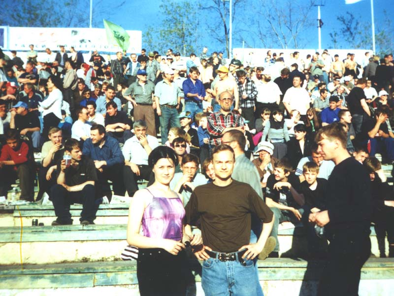

Я и моя сеструха
Танька на стадионе "Труд". Томь-Томск играет против Ижевского
Газовик-Газпром'а. Не помню чем закончился матч, но так как было очень
жарко и настроение не могло упасть ни при каких обстоятельствах, мы
пошли пить пиво и весь вечер отрывались на полную.